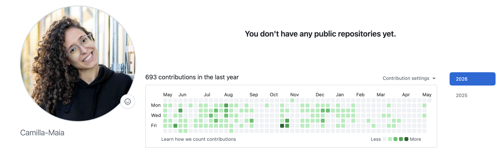
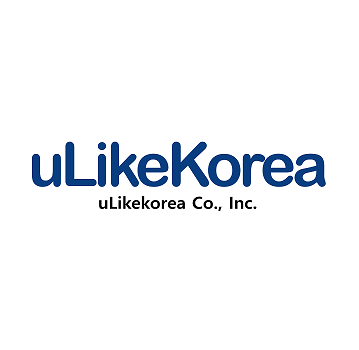
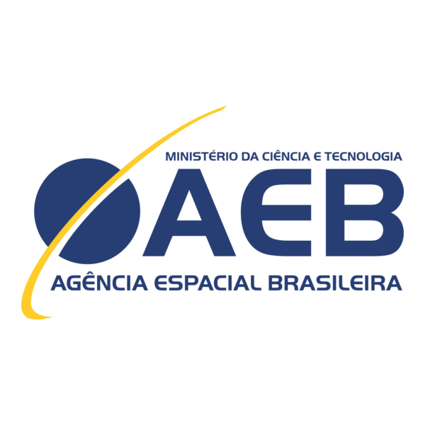

Camilla is a product designer and UX researcher who turns complex systems into experiences people actually want to use — with 7 years of international experience.🇧🇷 🇰🇷 🇩🇪

Specialist in complex B2B SaaS and developer-adjacent products. Design that moves metrics.
Comfortable in ambiguity. Comfortable across cultures. Comfortable recognising that living and designing is a continuous learning journey.
Good design is the logic underneath systems that deliver — how structure shapes behaviour, how the gap between intent and experience is where everything works or falls apart.
That thinking followed me across three countries. Brazil, where I learned to build digital products that serve people whose reality looks profoundly different from mine. South Korea, where I rewired how I communicate, collaborate, and ship — in a language and culture I had to earn from scratch. Germany, where I've spent five years as the sole designer at a B2B SaaS company, owning research, systems, and production code in the same role.
I don't run from complexity. I've moved countries, switched contexts, and evolved how I work across three different cultures and sets of expectations. Complexity, ambiguity, discomfort — handled with more empathy and more courage each time. That's not incidental to how I design. It's the foundation of it.
AI is the latest context shift I see myself in. I've shipped real work with it — prototyping in production code, testing with users the same day, collapsing the distance between idea and reality. But design is a craft, and technology will never be able to see and act on micro context cues like a human can. Design is all about humans, and good design is about keeping human experience at the centre of everything we do.
My specialty is the part of product design most people avoid — developer-adjacent decisions that live or die in implementation, information architecture that holds under edge cases, features that ship through real codebases.
I'm looking for remote-first roles where design owns outcomes, with teams who treat user experience as a core discipline, not an afterthought.
I work in the codebase, not just in Figma. My workflow: identify the hypothesis, prototype it in code using AI tooling, test with real users on a branch the same day, then hand off to engineering for review and release.
693 commits in the last year — all to Echometer's private repository. Not to replace engineers, but because decisions only become real when you test them in the actual product.

Solo product designer on a B2B SaaS platform for team development — retrospectives, 1:1s, and structured feedback. Owned end-to-end design across discovery, experimentation, and implementation in a PLG environment. Improved signup conversion by 49.64% and M1 activation by 192% through iterative A/B testing and direct implementation in HTML and Tailwind CSS.

Led end-to-end design for a new cross-platform health tracking product (web, iOS, Android) from concept to prototype. Concurrently owned the complete redesign of the company's main iOS and Android product.
Designed data-informed user experiences and managed cross-functional delivery for a B2B advertising platform.
Led UX/UI projects translating academic research into applied digital products. Coordinated junior researchers and delivered outcomes in collaboration with industry partners.

Contributed to UX and system design for a national MOOC platform, supporting complex learning interactions and digital experience development.